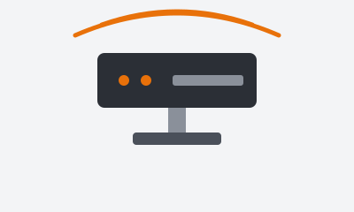

Configuração
Configuração de redes
Instalação e ajuste de roteadores, switches, Wi-Fi e endereçamento IP.
Solicitar atendimento →Conectividade, segurança e suporte técnico
Seção de apresentação
A Central de Serviços de Rede reúne os atendimentos técnicos da instituição: configuração, suporte, segurança e monitoramento da infraestrutura.

Configuração
Instalação e ajuste de roteadores, switches, Wi-Fi e endereçamento IP.
Solicitar atendimento →Suporte
Ajuda com acesso à internet, impressoras, e-mail e equipamentos de uso diário.
Solicitar atendimento →Segurança
Antivírus, controle de acessos, firewall e orientações de uso seguro.
Solicitar atendimento →Monitoramento
Acompanhamento da disponibilidade e do desempenho dos serviços de rede.
Solicitar atendimento →